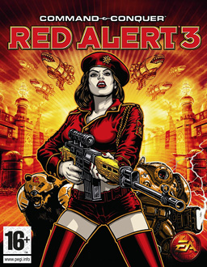

Synopsis
As the Soviet Union faced the defeat of the Allies, Soviet generals Nikolai Krukov and Anatoly Herdenko used the time machine under the Rimlin Palace in 1927. Solvay returned to Brussels at the International Conference on Physics and eliminated Albert Einstein, thus changing the future. Returning to the present, they found that Herdenko was the Soviet prime minister, which annoyed General Krukov. When Japan's Chaoyang Empire declared war on the Soviet Union and its allies and hoped to rule the world completely, the Soviet Union was on the verge of conquering Europe, and they thought it was their sacred fate. Since Einstein was eliminated, nuclear weapons have not yet been invented, and the Soviet Union cannot stop the invasion. This started the Three Kingdoms War, the three-way war between the Soviet Union, the Allies and the Empire.